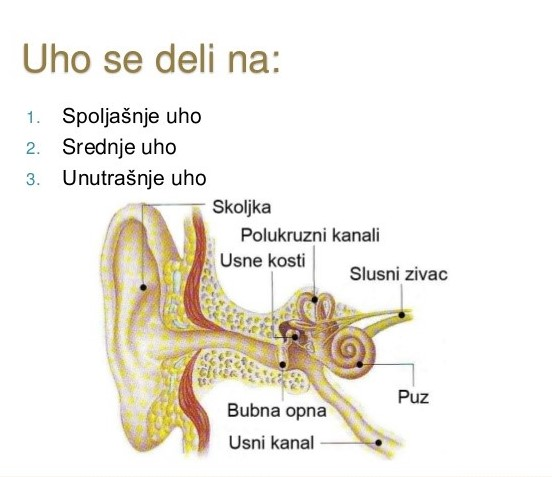
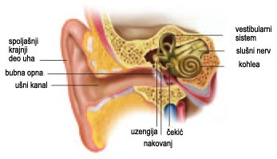
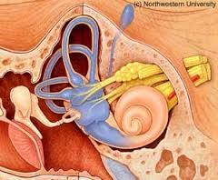
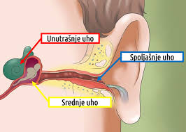

Čulo sluha je veoma važno za komunikaciju. Zvuci nas obavještavaju o onome što se dešava u našoj okolini, mogu da nas upozore. U nekim zvucima uživamo, drugi mogu biti neprijatni. Uho prima zvučne talase, prevodi ih u nervne impulse, oni se slušnim nervom prenose do centra za sluh. U mozgu se impulsi dešifruju i mi postajemo svjesni zvuka koji smo čuli. Uho nije samo organ čula sluha, u njemu su smješteni i receptori čula ravnoteže i orjentacije u prostoru.
Uho se sastoji od tri osnovna dijela: spoljašnjeg, srednjeg i unutrašnjeg uha. Spoljašnje i srednje uho su pomoćni organi, koji prikupljaju i sprovode zvučne talase do unutrašnjeg uha. Unutrašnje uho je organ u kome su smješteni receptori za sluh i ravnotežu.
Djelovi uha
Spoljašnje uho sastoji se od ušne školjke i spoljašnjeg ušnog kanala na čijem kraju se nalazi bubna opna. Ušna školjka je ljevkasta i naborana; građena je od hrskavice i prevučena kožom. I spoljašnji ušni kanal obložen je kožom; u njemu se nalaze dlačice i žlijezde. Žlijezde izlučuju sekret-ušnu mast, koja kao i dlačice zadržava sitne čestice i mikroorganizme i podmazuje bubnu opnu.
Srednje uho je smješteno u slijepoočnoj kosti. U njemu se nalaze tri slušne koščice: čekić, nakovanj i uzengija, koje su međusobno zglobno povezane. Srednje uho povezani je sa ždrijelom kanalom koji se naziva Eustahijeva tuba. Ovaj kanal omogućava izjednačavanje pritiska sa obje strane bubne opne, što je važno za njenu funkciju.
 Unutrašnje uho je najsloženiji dio uha. Koštani dio čine koštani puž, trijem i tri polukružna kanala. Opnasti dio je smješten u koštanom; grade ga opnasti puž, mješinica, kesica i tri polukružna kanala. U opnastom pužu nalaze se receptori čula sluha; taj dio naziva se Kortijev organ.
Ušna školjka sakuplja zvučne talase i usmjerava ih u spoljašnji ušni kanal, kojim se talasi sprovode do bubne opne. Zvuk izaziva vibriranje bubne opne, koje se prenosi na slušne koščice-čekić, nakovan i uzengiju. Baza uzengije zatvara ovalni otvor, preko koga se treperenje prenosi na tečnost u unutrašnjem uhu. Treperenje se prenosi na receptore u Kortijevom organu. Ove ćelije proizvode nervne impulse, koji slušnim nervom stižu do slijepočnog dijela velikog mozga gdje se nalazi centar za sluh.
Građa uha
Čulo ravnoteže nam omogućava održavanje ravnoteže tijela u svakom momentu: dok sjedimo, hodamo ili se vrtimo na prstima... Receptori ovog čula su smješteni u polukružnim kanalićima i mjehurićima unutrašnjeg uha.
Polukružni kanalići postavljeni su pod pravim uglom jedan u odnosu na drugi. Jedan kraj kanalića je proširen (ampula) i u njemu se nalaze čulne ćelije sa trepljama. Pri svakom pokretu tijela, ili promjeni brzine kretanja, dolazi do pokretanja tečnosti u polukružnim kanalićima. Ovo kretanje tečnosti draži treplje i receptori stvaraju nervne impulse koji se nervnim vlaknima prenose do malog mozga.
Kesica i mješnica sadrže čulne ćelije sa trepljama koje su uronjene u želatinoznu materiju, u kojoj se nalaze kristali kalcijum karbonata. Prilikom promjene položaja glave, kristali se pokreću i nadražuju treplje čulnih ćelija. Nervni impulsi prostiru se nervnim vlaknima do mozga.
Iz receptora u polukružnim kanalićima mozak dobija informacije o položaju tijela i omogućava održavanje ravnoteže.